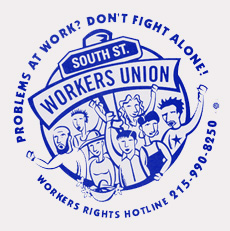

Submitted on Wed, 06/09/2010 - 2:44pm
 Members of the Philadelphia General Membership Branch of the Industrial Workers of the World will picket the German Consul during his appearance at the Union League (140 South Broad St.) Thursday at noon to speak to members of the German-American Chamber of Commerce. This is the second action held in Philadelphia protesting escalating violations of basic labor rights in Germany.
Members of the Philadelphia General Membership Branch of the Industrial Workers of the World will picket the German Consul during his appearance at the Union League (140 South Broad St.) Thursday at noon to speak to members of the German-American Chamber of Commerce. This is the second action held in Philadelphia protesting escalating violations of basic labor rights in Germany.
Consul General of the Federal Republic of Germany Dr. Horst Freitag will be speaking in Philadelphia as a German appeals court meets to hear an appeal by the Free Workers Union (FAU) against a court order barring them from exercising basic labor rights, including describing themselves as a union, appealing to the public to support their members engaged in industrial disputes, or seeking to negotiate with employers for better conditions.
Submitted on Sat, 01/30/2010 - 8:27pm

Submitted on Fri, 07/11/2008 - 2:17am
By John Kalwaic - originally posted to indymedia.org (view the video at this link)
On July 5th , some members of the
Philadelphia branch of the Industrial Workers of the World and I
organized a small demonstration in front the Starbucks on 9th and South
Street at 1:00pm. This action was to protest the firing of Starbucks
baristas who had been trying to unionize with the IWW Starbucks Workers
Union in the United States. This event was coordinated with the
Anarchist CNT Union in Spain where baristas have also been fired for
organizing. Friends and family of IWW members also came by to show
support for the demonstration. Protestors came with IWW flags and songs
condemning the actions of Starbucks against union members in New York
City, Grand Rapids Michigan and Seville Spain. We also handed out
flyers so people could contact Starbucks in order to voice disapproval
to the company for its union busting polices. The pickets sang songs
such as Solidarity Forever and chanted “What’s Disgusting!?-Union
Busting! What’s Outrages?!-Starbucks Wages!”
When we first set up
the manger came to yell at us because she thought for sure we were
doing something illegal. We told her that this is a public sidewalk and
we could have a demonstration if we wanted. The manager said she was
going to call the authorities and tell them what we were doing, However
no policeman ever came to bother us since we were not blocking the
sidewalk or the entrance to Starbucks. The manager posted an orange
sing on the door that said, “We love our jobs.” Despite this typical
act of managerial propaganda most people were receptive and took the
flyers we were handing out. The Philadelphia IWW is not currently
organizing any Starbucks workers; rather we are organizing a solidarity
rally with Starbucks workers in other US cities in other parts of the
world. The demonstration was successful and we got our message across.
starbucksunion.org
Submitted on Tue, 09/27/2005 - 7:15pm
The South Street Workers Union asks for your support to stop the deportation of Omar Lezama de la Rosa
 September 19, 2005
Dear friends:
Omar Lezama de la Rosa, a friend to many restaurant workers on South Street, is facing deportation after being wrongly arrested in July. Below is a resolution from the Philadelphia Bar Association explaining the facts of his case.
We are organizing to show the United States Immigration and Customs Enforcement office that our brother Omar has strong support. The Immigration office has discretion in which cases it chooses to pursue, so we are trying to stop the proceedings against Omar before they get to court.
Omar has a year-and-a-half-old son and wants to keep living in Philadelphia with his family and friends.
Please sign our petition. If you are in a position to collect more signatures, please call the IWW union office at 215-222-2432.
Yours in solidarity, Nakiya Heigler and Steve Renzi for the South Street Workers Union
PHILADELPHIA BAR ASSOCIATION RESOLUTION OPPOSING ATTEMPTS TO DEPORT OMAR LEZAMA de la ROSA
Submitted on Wed, 05/11/2005 - 3:52pm
By Jon Bekken - Industrial Worker, April 2005.
The IWW-affiliated South Street Workers Union is organizing retail and
food service workers along Philadelphia's South Street corridor,
implementing a model of solidarity unionism focused on helping workers
create their own shop floor and district-wide organizations to confront
low wages, poor working conditions, and the lack of workplace rights.
Since the union began organizing in August 2003, the South Street Workers
Union has organized health, tax and workers' rights clinics; social
events; a district-wide grievance committee that has helped workers claim
unpaid wages and develop strategies to improve working conditions; and
organized a campaign against proposed mass transit fare increases and
service cutbacks.